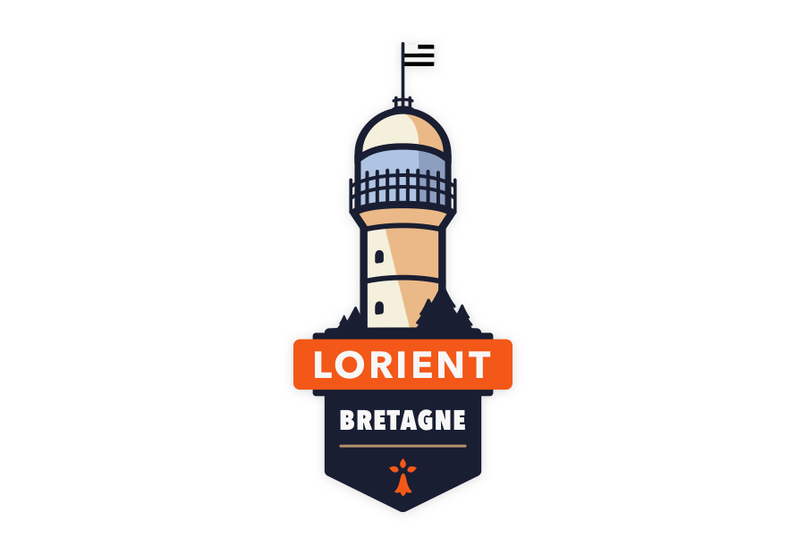
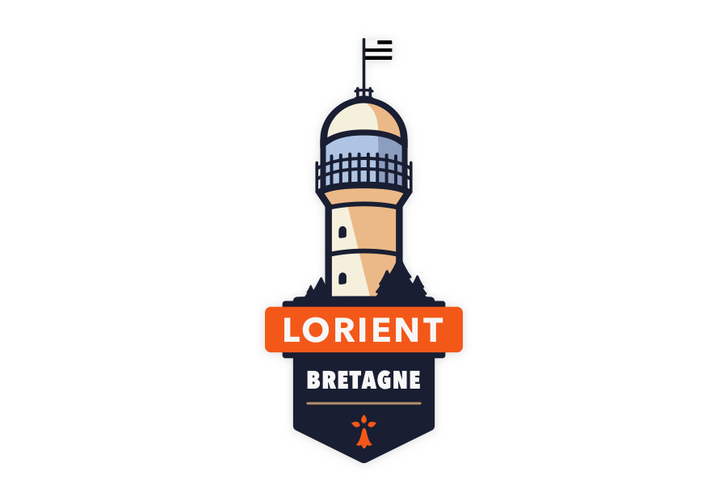
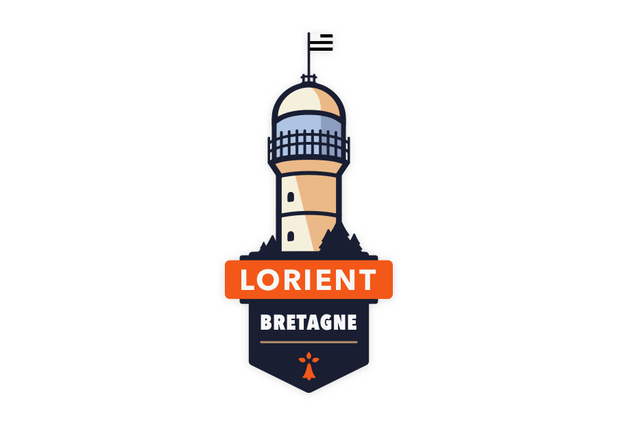

Snap filter
Series of illustration
Snap filter is a series of Snapchat geofilters, created for different cities.
These filters, made on Sketch, represent remarkable monuments of each city. They are currently visible on Snapchat.
 

Snap filter is a series of Snapchat geofilters, created for different cities.
These filters, made on Sketch, represent remarkable monuments of each city. They are currently visible on Snapchat.
